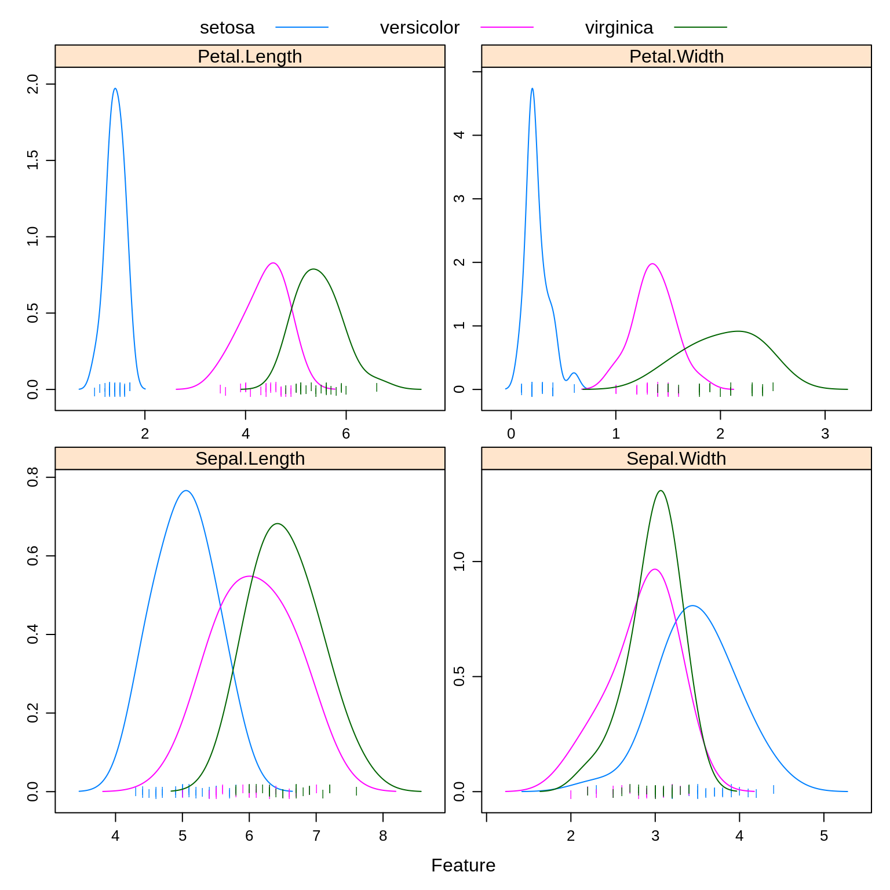

Chapter 10 Generative Models
In this chapter, we continue our discussion of classification methods. We introduce three new methods, each a generative method. This in comparison to logistic regression, which is a discriminative method.
Generative methods model the joint probability, \(p(\boldsymbol{x}, y)\), often by assuming some distribution for the conditional distribution of \(\boldsymbol{X}\) given \(Y\), \(f(\boldsymbol{x} \mid y)\). Bayes theorem is then applied to classify according to \(p(y \mid \boldsymbol{x})\). Discriminative methods such as logistic regression directly model this conditional, \(p(y \mid \boldsymbol{x})\). A detailed discussion and analysis can be found in Ng and Jordan, 2002.
10.1 Reading
- Required: ISL Chapter 4, Sections 4
Each of the methods in this chapter will use Bayes theorem to build a classifier.
\[ p_k(\boldsymbol{x}) = P(Y = k \mid \boldsymbol{X} = \boldsymbol{x}) = \frac{\pi_k \cdot f_k(\boldsymbol{x})}{\sum_{g = 1}^{G} \pi_g \cdot f_g(\boldsymbol{x})} \]
We call \(p_k(\boldsymbol{x})\) the posterior probability, which we will estimate then use to create classifications. The \(\pi_g\) are called the prior probabilities for each possible class \(g\). That is, \(\pi_g = P(Y = g)\), unconditioned on \(\boldsymbol X\). (Here, there are \(G\) possible classes, denoted \(1, 2, \ldots G\). We use \(k\) to refer to a particular class.) The \(f_g(x)\) are called the likelihoods, which are indexed by \(g\) to denote that they are conditional on the classes. The denominator is often referred to as a normalizing constant.
The methods will differ by placing different modeling assumptions on the likelihoods, \(f_g(\boldsymbol x)\). For each method, the priors could be learned from data or pre-specified.
For each method, classifications are made to the class with the highest estimated posterior probability, which is equivalent to the class with the largest
\[ \log(\hat{\pi}_k \cdot \hat{f}_k(\boldsymbol{x})). \]
By substituting the corresponding likelihoods, simplifying, and eliminating unnecessary terms, we could derive the discriminant function for each.
To illustrate these new methods, we return to the iris data, which you may remember has three classes. After a test-train split, we create a number of plots to refresh our memory.
set.seed(9)
iris_idx = sample(nrow(iris), size = trunc(0.50 * nrow(iris)))
# iris_idx = sample(nrow(iris), size = trunc(0.10 * nrow(iris)))
iris_trn = iris[iris_idx, ]
iris_tst = iris[-iris_idx, ]Note that we have only performed a test-train split, so we are not validating any of these models. Also note that using 50% of the data for training is an arbitrary choice here.
caret::featurePlot(x = iris_trn[, c("Sepal.Length", "Sepal.Width",
"Petal.Length", "Petal.Width")],
y = iris_trn$Species,
plot = "density",
scales = list(x = list(relation = "free"),
y = list(relation = "free")),
adjust = 1.5,
pch = "|",
layout = c(2, 2),
auto.key = list(columns = 3))
caret::featurePlot(x = iris_trn[, c("Sepal.Length", "Sepal.Width",
"Petal.Length", "Petal.Width")],
y = iris_trn$Species,
plot = "ellipse",
auto.key = list(columns = 3))
caret::featurePlot(x = iris_trn[, c("Sepal.Length", "Sepal.Width",
"Petal.Length", "Petal.Width")],
y = iris_trn$Species,
plot = "box",
scales = list(y = list(relation = "free"),
x = list(rot = 90)),
layout = c(4, 1))
Especially based on the pairs plot, we see that it should not be too difficult to find a good classifier.
Notice that we use caret::featurePlot to access the featurePlot() function without loading the entire caret package.
10.2 Linear Discriminant Analysis
Linear Discriminant Analysis, LDA, assumes that the features are multivariate normal conditioned on the classes.
\[ \boldsymbol{X} \mid Y = k \sim N(\boldsymbol{\mu}_k, \boldsymbol\Sigma) \]
\[ f_k(\boldsymbol{x}) = \frac{1}{(2\pi)^{p/2}|\boldsymbol\Sigma|^{1/2}}\exp\left[-\frac{1}{2}(\boldsymbol x - \boldsymbol\mu_k)^{\prime}\boldsymbol\Sigma^{-1}(\boldsymbol x - \boldsymbol\mu_k)\right] \]
Notice that \(\boldsymbol\Sigma\) does not depend on \(k\), that is, we are assuming the same \(\Sigma\) for each class. We then use information from all the classes to estimate \(\boldsymbol\Sigma\).
To fit an LDA model, we use the lda() function from the MASS package.
## Call:
## lda(Species ~ ., data = iris_trn)
##
## Prior probabilities of groups:
## setosa versicolor virginica
## 0.4000000 0.2933333 0.3066667
##
## Group means:
## Sepal.Length Sepal.Width Petal.Length Petal.Width
## setosa 5.033333 3.490000 1.413333 0.2466667
## versicolor 6.068182 2.850000 4.372727 1.3636364
## virginica 6.534783 2.986957 5.452174 2.0217391
##
## Coefficients of linear discriminants:
## LD1 LD2
## Sepal.Length 0.2941746 -0.4021398
## Sepal.Width 1.5879728 1.6962530
## Petal.Length -2.7473811 -0.9385391
## Petal.Width -2.3223845 3.1408028
##
## Proportion of trace:
## LD1 LD2
## 0.9959 0.0041Here we see the estimated \(\hat{\pi}_k\) and \(\hat{\boldsymbol\mu}_k\) for each class.
## [1] TRUE## [1] "class" "posterior" "x"## [1] versicolor setosa versicolor versicolor setosa virginica
## [7] setosa setosa setosa setosa
## Levels: setosa versicolor virginica## setosa versicolor virginica
## 53 1.061809e-34 9.884510e-01 1.154896e-02
## 6 1.000000e+00 9.796157e-28 7.784092e-51
## 59 1.685242e-30 9.998375e-01 1.624818e-04
## 83 1.971739e-22 9.999997e-01 3.057713e-07
## 3 1.000000e+00 1.437420e-28 1.155778e-52
## 140 1.106749e-51 1.917744e-04 9.998082e-01
## 48 1.000000e+00 4.855435e-27 1.296275e-50
## 30 1.000000e+00 2.216075e-24 3.964649e-47
## 44 1.000000e+00 4.020843e-23 1.979000e-44
## 37 1.000000e+00 3.629736e-32 1.883675e-57As we should come to expect, the predict() function operates in a new way when called on an lda object. By default, it returns an entire list. Within that list class stores the classifications and posterior contains the estimated probability for each class.
iris_lda_trn_pred = predict(iris_lda, iris_trn)$class
iris_lda_tst_pred = predict(iris_lda, iris_tst)$classWe store the predictions made on the train and test sets.
## [1] 0## [1] 0.02666667As expected, LDA performs well on both the train and test data. (Note that the “training error” here is calculated on the training data since there is no validation data. This is not how we have usually defined training error.)
## actual
## predicted setosa versicolor virginica
## setosa 20 0 0
## versicolor 0 26 0
## virginica 0 2 27Looking at the test set, we see that we are perfectly predicting both setosa and virginica. The only error is labeling a couple versicolors as a virginica.
## Call:
## lda(Species ~ ., data = iris_trn, prior = c(1, 1, 1)/3)
##
## Prior probabilities of groups:
## setosa versicolor virginica
## 0.3333333 0.3333333 0.3333333
##
## Group means:
## Sepal.Length Sepal.Width Petal.Length Petal.Width
## setosa 5.033333 3.490000 1.413333 0.2466667
## versicolor 6.068182 2.850000 4.372727 1.3636364
## virginica 6.534783 2.986957 5.452174 2.0217391
##
## Coefficients of linear discriminants:
## LD1 LD2
## Sepal.Length 0.2950319 -0.4015112
## Sepal.Width 1.5843501 1.6996372
## Petal.Length -2.7453724 -0.9443988
## Petal.Width -2.3290804 3.1358407
##
## Proportion of trace:
## LD1 LD2
## 0.9951 0.0049Instead of learning (estimating) the proportion of the three species from the data, we could instead specify them ourselves. Here we choose a uniform distributions over the possible species. We would call this a “flat” prior.
iris_lda_flat_trn_pred = predict(iris_lda_flat, iris_trn)$class
iris_lda_flat_tst_pred = predict(iris_lda_flat, iris_tst)$class## [1] 0.01333333## [1] 0.01333333This actually gives a better test accuracy! In practice, this could be useful if you have prior knowledge about the future proportions of the response variable.
10.3 Quadratic Discriminant Analysis
Quadratic Discriminant Analysis, QDA, also assumes that the features are multivariate normal conditioned on the classes.
\[ \boldsymbol X \mid Y = k \sim N(\boldsymbol\mu_k, \boldsymbol\Sigma_k) \]
\[ f_k(\boldsymbol x) = \frac{1}{(2\pi)^{p/2}|\boldsymbol\Sigma_k|^{1/2}}\exp\left[-\frac{1}{2}(\boldsymbol x - \boldsymbol\mu_k)^{\prime}\boldsymbol\Sigma_{k}^{-1}(\boldsymbol x - \boldsymbol\mu_k)\right] \]
Notice that now \(\boldsymbol\Sigma_k\) does depend on \(k\), that is, we are allowing a different \(\boldsymbol\Sigma_k\) for each class. We only use information from class \(k\) to estimate \(\Sigma_k\).
## Call:
## qda(Species ~ ., data = iris_trn)
##
## Prior probabilities of groups:
## setosa versicolor virginica
## 0.4000000 0.2933333 0.3066667
##
## Group means:
## Sepal.Length Sepal.Width Petal.Length Petal.Width
## setosa 5.033333 3.490000 1.413333 0.2466667
## versicolor 6.068182 2.850000 4.372727 1.3636364
## virginica 6.534783 2.986957 5.452174 2.0217391Here the output is similar to LDA, again giving the estimated \(\hat{\pi}_k\) and \(\hat{\boldsymbol\mu}_k\) for each class. Like lda(), the qda() function is found in the MASS package.
Consider trying to fit QDA again, but this time with a smaller training set. (Use the commented line above to obtain a smaller test set.) This will cause an error because there are not enough observations within each class to estimate the large number of parameters in the \(\boldsymbol\Sigma_k\) matrices. This is less of a problem with LDA, since all observations, no matter the class, are being use to estimate the shared \(\boldsymbol\Sigma\) matrix.
iris_qda_trn_pred = predict(iris_qda, iris_trn)$class
iris_qda_tst_pred = predict(iris_qda, iris_tst)$classThe predict() function operates the same as the predict() function for LDA.
## [1] 0.01333333## [1] 0.02666667## actual
## predicted setosa versicolor virginica
## setosa 20 0 0
## versicolor 0 26 0
## virginica 0 2 27Here we see that QDA has similar performance to LDA. This is somewhat surprising, as we can see from the plots above that the covariance matrix for each class is likely not the same. In this case, we would sort of assume that LDA is too restrictive a model as it assumes the same covariance within each class. (It is likely due to the high seperation of the data that this doesn’t make much of a difference. Also, random chance as we’re not dealing with a lot of data.)
Since QDA is a more complex model than LDA (it has many more parameters), QDA is more likely to overfit than LDA. (Although, that does not seem to have happened here.)
Also note that, QDA creates quadratic decision boundaries, while LDA creates linear decision boundaries. We could also add quadratic terms to LDA to allow it to create quadratic decision boundaries.
10.4 Naive Bayes
Naive Bayes comes in many forms. With only numeric features, it often assumes a multivariate normal conditioned on the classes, but a very specific multivariate normal.
\[ {\boldsymbol X} \mid Y = k \sim N(\boldsymbol\mu_k, \boldsymbol\Sigma_k) \]
Naive Bayes assumes that the features \(X_1, X_2, \ldots, X_p\) are independent. This is the “naive” part of naive Bayes. The Bayes part is nothing new. Since \(X_1, X_2, \ldots, X_p\) are assumed independent, each \(\boldsymbol\Sigma_k\) is diagonal, that is, we assume no correlation between features. Independence implies zero correlation.
This will allow us to write the (joint) likelihood as a product of univariate distributions. In this case, the product of univariate normal distributions instead of a (joint) multivariate distribution.
\[ f_k(\boldsymbol x) = \prod_{j = 1}^{p} f_{kj}(\boldsymbol x_j) \]
Here, \(f_{kj}(\boldsymbol x_j)\) is the density for the \(j\)-th feature conditioned on the \(k\)-th class. Notice that there is a \(\sigma_{kj}\) for each feature for each class.
\[ f_{kj}(\boldsymbol x_j) = \frac{1}{\sigma_{kj}\sqrt{2\pi}}\exp\left[-\frac{1}{2}\left(\frac{x_j - \mu_{kj}}{\sigma_{kj}}\right)^2\right] \]
When \(p = 1\), this version of naive Bayes is equivalent to QDA.
## grouping
## setosa versicolor virginica
## 0.4000000 0.2933333 0.3066667## $Sepal.Length
## [,1] [,2]
## setosa 5.033333 0.4113337
## versicolor 6.068182 0.5454455
## virginica 6.534783 0.4744458
##
## $Sepal.Width
## [,1] [,2]
## setosa 3.490000 0.4293941
## versicolor 2.850000 0.3661251
## virginica 2.986957 0.2881041
##
## $Petal.Length
## [,1] [,2]
## setosa 1.413333 0.1696514
## versicolor 4.372727 0.4014045
## virginica 5.452174 0.4176444
##
## $Petal.Width
## [,1] [,2]
## setosa 0.2466667 0.1074255
## versicolor 1.3636364 0.1890967
## virginica 2.0217391 0.3302293Many packages implement naive Bayes. Here we choose to use NaiveBayes() from the package klaR.
The output from iris_nb$tables gives the mean and standard deviation of the normal distribution for each feature in each class. Notice how these mean estimates match those for LDA and QDA above.
## 53 6 59 83 3 140
## versicolor setosa versicolor versicolor setosa virginica
## Levels: setosa versicolor virginica## setosa versicolor virginica
## 53 5.055141e-125 5.374900e-01 4.625100e-01
## 6 1.000000e+00 1.766595e-17 2.305313e-26
## 59 1.128364e-100 9.819623e-01 1.803765e-02
## 83 1.309820e-64 9.999750e-01 2.495426e-05
## 3 1.000000e+00 1.148004e-23 1.144944e-32
## 140 7.356900e-189 8.546334e-06 9.999915e-01iris_nb_trn_pred = predict(iris_nb, iris_trn)$class
iris_nb_tst_pred = predict(iris_nb, iris_tst)$class## [1] 0.04## [1] 0.04## actual
## predicted setosa versicolor virginica
## setosa 20 0 0
## versicolor 0 26 1
## virginica 0 2 26Like LDA, naive Bayes is having trouble with virginica.
| Method | Train Error | Test Error |
|---|---|---|
| LDA | 0.0000000 | 0.0266667 |
| LDA, Flat Prior | 0.0133333 | 0.0133333 |
| QDA | 0.0133333 | 0.0266667 |
| Naive Bayes | 0.0400000 | 0.0400000 |
Summarizing the results, we see that Naive Bayes is the worst of LDA, QDA, and NB for this data. So why should we care about naive Bayes?
The strength of Naive Bayes comes from its ability to handle a large number of features, \(p\), even with a limited sample size \(n\). Even with the naive independence assumption, Naive Bayes works rather well in practice. Also because of this assumption, we can often train naive Bayes where LDA and QDA may be impossible to train because of the large number of parameters relative to the number of observations.
Here naive Bayes doesn’t get a chance to show its strength since LDA and QDA already perform well, and the number of features is low. The choice between LDA and QDA is mostly down to a consideration about the amount of complexity needed. (Also note that complexity within these models can also be altered by changing the features used. More features generally means a more flexible model.)
10.5 Discrete Inputs
So far, we have assumed that all features are numeric. What happens with categorical features?
# create "new" dataset
iris_trn_mod = iris_trn
# made Sepal.Width categorical
iris_trn_mod$Sepal.Width = factor(ifelse(iris_trn$Sepal.Width > 3,
ifelse(iris_trn$Sepal.Width > 4,
"Large", "Medium"),
"Small"))
# check levels of factor
levels(iris_trn_mod$Sepal.Width)## [1] "Large" "Medium" "Small"Here we make a new dataset where Sepal.Width is categorical, with levels Small, Medium, and Large. We then try to train classifiers using only the sepal variables.
## $Sepal.Length
## [,1] [,2]
## setosa 5.033333 0.4113337
## versicolor 6.068182 0.5454455
## virginica 6.534783 0.4744458
##
## $Sepal.Width
## var
## grouping Large Medium Small
## setosa 0.1000000 0.7666667 0.1333333
## versicolor 0.0000000 0.3181818 0.6818182
## virginica 0.0000000 0.4347826 0.5652174Naive Bayes makes a somewhat obvious and intelligent choice to model the categorical variable as a multinomial. It then estimates the probability parameters of a multinomial distribution.
## Call:
## lda(Species ~ Sepal.Length + Sepal.Width, data = iris_trn_mod)
##
## Prior probabilities of groups:
## setosa versicolor virginica
## 0.4000000 0.2933333 0.3066667
##
## Group means:
## Sepal.Length Sepal.WidthMedium Sepal.WidthSmall
## setosa 5.033333 0.7666667 0.1333333
## versicolor 6.068182 0.3181818 0.6818182
## virginica 6.534783 0.4347826 0.5652174
##
## Coefficients of linear discriminants:
## LD1 LD2
## Sepal.Length 2.259576 0.6833882
## Sepal.WidthMedium 1.531021 -0.5070114
## Sepal.WidthSmall 3.119457 -2.3385379
##
## Proportion of trace:
## LD1 LD2
## 0.9879 0.0121LDA (and QDA) however creates dummy variables, here with Large as the reference level, then continues to model them as normally distributed. Not great, but better then not using a categorical variable.